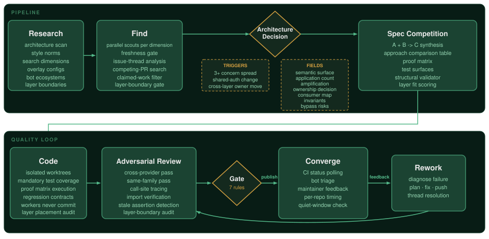

Every new agent platform pitches the same thing: run a hundred agents, watch them on a dashboard, scale beyond headcount. It's an infrastructure play that makes sense, but the result is practically guaranteed to be sub-par at best, or a disaster at worst. The problems are only obvious when you go to production, yet none of the platforms are trying to solve them.
That goes for all of them: Claude Squad, amux, Conductor, AgentsMesh, claude-flow, ccswarm.
The technical parts (git worktrees, watchdogs, task boards, dashboards, fleet management) work well in isolation to prevent file conflicts, restart crashed sessions, and track assignments, but they operate on a flawed premise: that an agent session will come back with good output, given N dice-rolls, just because it runs to completion.
The problems at scale range from subtle bugs that grow tech debt, to full-on reputational damage.
These problems have solutions, and those solutions belong in the harness. No platform includes them yet. The first core principles I use are:

A pipeline built this way can hit 98% acceptance across hundreds of PRs, with no human in the loop after target selection. (basedin.nyc/pr-stats, more details at the bottom.) I also use three principles upstream of implementation:
This approach helps combat a slew of problems:
For this, I use a continuation guard written in Node.js that hooks into the model's turn boundary. Every time it tries to stop, the guard checks a status tracker for incomplete stages, and the script kicks the agent back into the loop with a prompt to finish incomplete work. The model can't reason its way past it, and this makes cheaper models viable drop-in replacements for implementation. The script works with the harness to decide when work is done, not the model.
Two providers independently write implementation specs; the validator rejects unsound architecture. The synthesized plan includes an approach comparison table showing why the final plan is stronger than either input. Each execution prompt carries a proof matrix defining the evidence the implementation must produce:
Every new function, method, or error path requires a covering test. The proof matrix declares the required surfaces; uncovered code paths beyond those still need tests. These requirements carry forward into review, where each pass verifies they were met.
A plan can pass cross-provider competition and still produce a structural disaster. Both providers thread a model-filtering predicate through 15 independent code paths (5 UI panels, 3 data backends) because it looks locally correct at each one. The proof matrix passes because each path individually produces the right output. The problem surfaces when the next feature needs the filter changed: 15 coordinated updates, and missing one produces a silent data bug in one panel on one backend.
An architecture decision gate triggers when a plan applies the same concern across 3 or more independent code paths. It requires seven fields that force the planner to make the structural decision explicit:
The validator blocks registration if any field is missing, if bypass risks are trivial for a shared owner, or if the coder's execution prompt doesn't reproduce the full decision. At review time, a bypass audit greps the final diff for old predicates and direct constants that still implement the rule independently instead of routing through the named authority. This catches the class of problem that spec competition alone can't: plans where both providers agree on an approach that's locally correct but structurally unsound.
Same model-family review is an echo chamber where agents always approve their own outputs. It doesn't matter if the review happens in an agent session or a totally separate pass on the same provider because the weights and biases carry over. Cross-provider reviews break the pattern: one provider reviews another's code, then a different model family reviews the post-fix branch state.
Each pass produces artifacts that run through a deterministic gate (a subprocess, not a prompt) that classifies each review as substantive or malformed based on structural rules: coordination chatter, findings without file references, contradictory clean/dirty state, clean verdicts without trace evidence.
Reviews are scoped to concrete verification tasks:
The gate re-fires after every code change, so a fix that introduces a new problem restarts the cycle rather than sliding through on stale approval. Publish is blocked unless all passes clear.
The work is never done when the code is pushed. Integration tests run locally in the real environment before going upstream for CI. End-to-end verification happens there, on the repo's actual infrastructure. A convergence loop polls CI status, merge state, bot reviews, and maintainer feedback on a per-repo cycle tuned to each project's CI timing, bot ecosystem, and approval gates.
Some repos need coverage reports to land before the loop can evaluate; others auto-close PRs on compliance violations within hours. The convergence loop diagnoses CI failures, responds to bot findings, and addresses maintainer feedback. The PR reaches "done" only once every external signal is clean through a quiet window.
Perhaps it's still early days, but the agent orchestration platforms are working on the wrong problem. One founder's Twitter is a stream of commits fixing the same quality problems his product promises to solve.
Worktrees, watchdogs, and sandboxes solve real problems, but they are easy ones. The hard problems are solved on the other side of the gap; those are the ones humans still consider to be their province: quality judgment, verification, and engineering discipline.
These are mechanical problems too, just more complex ones:
Every gate is a subprocess the model can't talk its way past. This is where the real work is happening.
300+ PRs, 250+ merged, 98% acceptance rate across 5 open-source repos, in 25 active days.
Full breakdown at basedin.nyc/pr-stats.